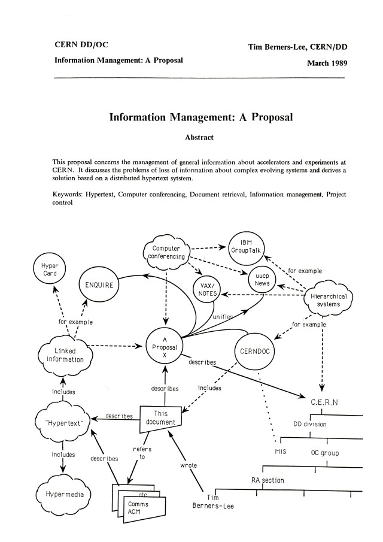

In 1989, a British scientist named Tim Berners-Lee invented the World Wide Web at CERN. Its purpose was to distribute scientific research easily between universities and institutes. His first proposal suggested a system called “Information Management: A Proposal”, but it lacked detailed specifications, so he submitted a second proposal called “Hypertext and CERN”, outlining the concepts of URLs, HTML, and a protocol for requesting and transferring documents. This laid the foundation for the modern web.

The first page of Tim Berners-Lee's proposal for the World Wide Web, written in March 1989 [1]
Milestones
1990: The first browser and the World Wide Web created
1991: The first website hosted at info.cern.ch[2] with the message “This machine is a server. DO NOT POWER DOWN!”
1991: Public launch of the Web
1993: Mosaic browser released
1994: Netscape Navigator launched
1995: Internet Explorer released by Microsoft and integrated with Windows
1998: Google is founded
2002: Mozilla Firefox released
2008: Google releases Chrome
2010s: Rise of smartphones and mobile-first design
2015: Microsoft Edge replaces Internet Explorer
Web Evolution
After the world wide web, Line-mode browser, the second web browser ever was created. It was text-based and could run on various computers. Shortly after, Mosaic became the first graphical browser. It allowed users to view images and navigate hyperlinks. Its success inspired Netscape Navigator and Internet Explorer leading to the browser wars. The competition accelerated innovation, leading to the creation of CSS, JavaScript and many more. HTML progressed through versions 2.0, 3.2, 4.01, XHTML and HTML5, allowing web pages to work consistently across browsers
The Latest in HTML Development
HTML5 is the fifth and current version of HTML. However, it is constantly maintained and improved by the WHATWG and W3C. So while there is no official HTML6, HTML continues to evolve to meet the demands of modern web development.
Intro of Arabic Letters and Symbols
In 2009, ICANN announced it would allow top-level domain names written in local languages and alphabets, not just Latin. In 2013, the first first Arabic borderless TLD شبكة (which means "web" in Arabic) was launched.
History of CSS
CSS was created by Håkon Wium Lie and Bert Bos. It is a fundamental language in web development used to style and make web content lively by allowing users to choose layout, fonts and colors. It started with CSS1, which introduced basic features for text styling, font properties, margins, padding, color and background styling and the box model. Then it was followed by CSS2, which added more sophisticated selectors and properties to enhance styling options. Later, CSS2.1 came in to solve all the inconsistencies in CSS2. Finally, CSS3 took over, enabling more advanced styling, animations, and responsive designs that are essential for modern websites. [3]
Modern Browsers
Today, web browsers such as Chrome, Firefox, Edge, and Safari prioritize speed, security and user experience. The rise of mobile-first browsers has shifted design priorities toward responsive layouts, ensuring websites function seamlessly across devices. According to statcounter [4], chrome is the leading browser with 69.23% of users using it worldwide. Its closest competitor, Safari, holds only 14.98%, followed by Microsoft Edge at 5.03%
The Future of the Web
Looking ahead, the web is evolving with cloud-based applications, AI integration and voice browsing which expand the ways users interact with online content. The next major phase is Web 4.0, also called the Intelligent or Symbiotic Web. It is based on machine learning, AI, and decentralized technology. Some of its key features are artificial intelligence, Internet of things, Decentralization, Advanced Interactivity and User-Centric Design. It is expected to impact industries such as Healthcare, smart city management, Agriculture, Education and Transportation. [5]